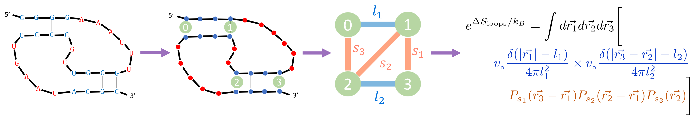

Predicting RNA pseudoknots: the LandscapeFold algorithm
RNA molecules are made up of repeating nucleotides arranged in a chain. There are only four different kinds of nucleotides, commonly called A, C, G, and U. These nucleotides interact with one another (A and U bind to one another, as do C and G, as well as G and U). These interactions not only mediate interactions between different RNA molecules, they also lead RNA molecules to fold up onto themselves, creating intricate structures. Being able to predict these structures is important because the structure of an RNA molecule often affects which DNA, RNA, and protein molecules it will bind. For this reason, many algorithms have been developed to predict RNA structure from sequence.
A common area in most of these algorithms struggle is when the RNA folds onto itself in a non-nested fashion, forming what’s called a pseudoknot. (See book chapter Fig. 1 for a description of pseudoknots). There are two main challenges with predicting pseudoknots. The first has to do with their entropy. In essence, in order for some nucleotides to bind to one another to form a pseudoknot, the positions of other nucleotides must be constrained. Since submicroscopic objects prefer to have freedom to move around at will, this constraint penalizes pseudoknot formation. Our first goal was to quantify this penalty.
The second main challenge with predicting pseudoknots is that once you allow for pseudoknotted structures, the number of possible structures into which a given RNA molecule can fold grows very large, such that enumerating all of these structures can in general take an extremely long time. (In technical terms, the pseudoknot enumeration problem is NP-hard). Our second goal was to demonstrate that for reasonably short RNA molecules – which can still be quite important both physiologically and in the lab – modern computers can achieve this enumeration very quickly. Therefore, as long as we don’t consider RNA molecules that are too long, we showed that the enumeration problem isn’t much of a problem after all.
The main thrust of the paper deals with the first challenge, of how to quantify the entropy of pseudoknots. We developed a formula that takes in a structure and outputs the entropy of that structure. The formula relies on two assumptions. First, that unbound nucleotides are maximally unstructured and free to move around willy-nilly (aside from being connected to one another). This is sometimes referred to as an “ideal chain approximation”, or as a “random walk”. Second, that regions of bound nucleotides are extremely rigid (the “rigid rod” approximation). By taking these two limits, we showed that we can estimate the entropy of any possible RNA structure, including any pseudoknotted structure.
This formula has two exciting features worth mentioning. The first is that it only relies on two parameters. This is important because when you have a formula that relies on a large number of parameters, you can fit the parameters on some dataset, but it can be difficult to know how well the formula with those parameters will generalize to a new dataset. Two is a small number here: all other known formulas for pseudoknot entropy rely on many more parameters (from dozens up to ~100). The formula also has some aesthetically nice features, such as a simple graphical interpretation, reminiscent of “Feynman diagrams”, which are graphically-interpretable formulas applicable to an entirely different (and non-biological) area of physics called quantum field theory. The process of taking a structure and turning it into an entropy is diagrammed in Fig. 3 of the Biophysical Journal paper, and in Figs. 2-4 of the book chapter.
Once we derived this formula, we wanted to test it and to allow others to use it in a streamlined way to predict pseudoknotted RNA structures. We therefore developed a new RNA structure prediction algorithm called LandscapeFold that 1) takes in a (relatively short) sequence; 2) enumerates all structures into which that sequence can fold (see the second goal discussed above); and 3) for each sequence, calculates its energy (based on prior work) and entropy (based on our new formula). This procedure is diagrammed in Fig. 1 of the Biophysical Journal paper. We showed that this algorithm is as good as or (in most cases) better than all other RNA structure prediction algorithms when it comes to predicting pseudoknots for short RNA molecules (Fig. 4 of the Biophysical Journal paper).
The Biophysical Journal paper derives our formula and presents the comparison between LandscapeFold and other prediction algorithms; the book chapter focuses solely on how to use LandscapeFold.